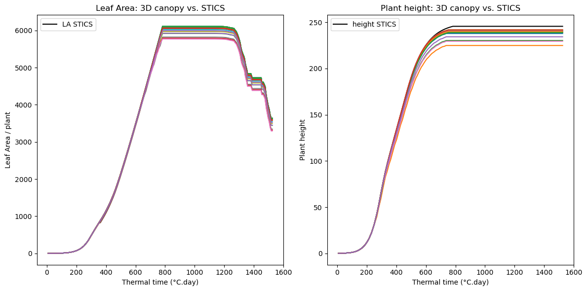
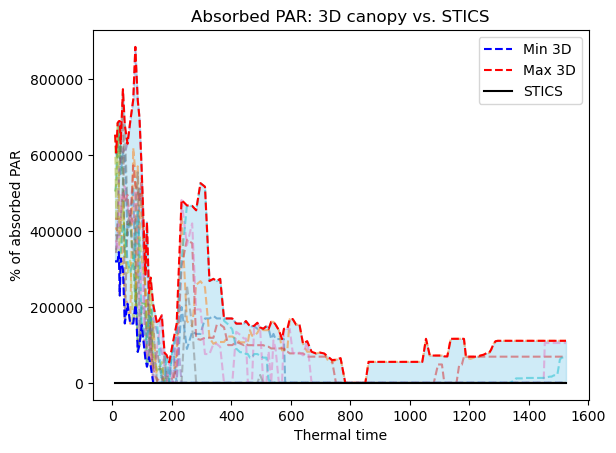
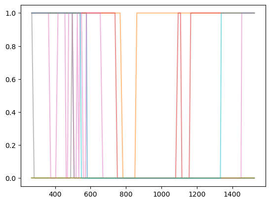

## Imports
import time as t
import math
import numpy as np
from random import *
import matplotlib.pyplot as plt
from scipy.stats import qmc
from oawidgets.plantgl import *
from openalea.plantgl.all import Material, Color3, Scene, Viewer
from alinea.astk import *
from openalea.archicrop.display import build_scene
from openalea.archicrop.simulation import read_sti_file, read_xml_file, dict_ranges_to_all_possible_combinations, generate_single_list_dicts, LHS_param_sampling, params_for_curve_fit
from openalea.archicrop.archicrop import ArchiCrop
from openalea.archicrop.plant_shape import compute_leaf_area_growing_plant, compute_height_growing_plant
from openalea.archicrop.light_it import compute_light_inter
from openalea.archicrop.stand import agronomic_plot
# Enable plotting with PlantGL
%gui qt
# Set nice color for plants
nice_green=Color3((50,100,0))5 Light interception with Caribu
seed(18)5.1 Retrieve STICS dynamics from file
stics_output_file = 'mod_smaize.sti'
file_tec_xml = 'Mais_tec.xml'
params_tec = ['densitesem', 'interrang']
tec_stics = read_xml_file(file_tec_xml, params_tec)
sowing_density = tec_stics['densitesem']
inter_row = 0.8
stics_output_data = read_sti_file(stics_output_file, sowing_density)
time = [value["Thermal time"] for value in stics_output_data.values()]
LA_stics = [value["Plant leaf area"] for value in stics_output_data.values()]
sen_LA_stics = [value["Senescent leaf area"] for value in stics_output_data.values()]
height_stics = [value["Plant height"] for value in stics_output_data.values()]
file_xml = 'corn_plt.xml'
params_sen = ['durvieF', 'ratiodurvieI']
sen_stics = read_xml_file(file_xml, params_sen)
lifespan = sen_stics['durvieF']
lifespan_early = sen_stics['ratiodurvieI'] * lifespan5.2 Vary chosen architectural and developmental parameters and select the sets of parameters that make the model fit
# Define parameter bounds
# For sorghum
archi_params = dict(
nb_phy = [10,22], # [10,15,20,25,30],
wl = 0.12,
diam_base = 2.2,
diam_top = 1.5,
insertion_angle = 45, # to vary for light interception
scurv = 0.666, # to vary for light interception
curvature = 90, # to vary for light interception
# alpha = -2.3,
klig=0.6,
swmax=0.55,
f1=0.64,
f2=0.92,
stem_q = 1.05,
rmax = [0.6,0.9], # 1-(1/3*(nb_phy - 5)/nb_phy)
skew = 0.0005, # [0.01, 0.1], # 0.08 # 0.0005
phyllotactic_angle = 180,
phyllotactic_deviation = 15, # to vary for light interception
phyllochron = [20,70],
plastochron = [30,80],
leaf_lifespan = [lifespan_early, lifespan],
increments = stics_output_data
)# Function to process parameters and generate samples
# Generate parameter sets
param_sets = LHS_param_sampling(archi_params, n_samples=100)
print(len(param_sets))58# Select parameters sets for which the model fits the LAI and the height curves of the crop model, with a given error.
# Start the timer
start_time = t.time()
fitting_sim = params_for_curve_fit(param_sets, curves=stics_output_data, error_LA=0.1, error_height=0.1)
# End the timer
end_time = t.time()
# Calculate elapsed time
elapsed_time = (end_time - start_time)/60
print(f"Elapsed time: {elapsed_time:.4f} minutes")Elapsed time: 1.1500 minutes# Create a figure with two subplots side by side
fig, axes = plt.subplots(1, 2, figsize=(12, 6)) # 1 row, 2 columns
# Plot on the first subplot
axes[0].plot(time, [la-sen for la, sen in zip(LA_stics, sen_LA_stics)], color="black", label="LA STICS")
for result in fitting_sim['LA']:
axes[0].plot(time, result)
axes[0].set_xlabel("Thermal time (°C.day)")
axes[0].set_ylabel("Leaf Area / plant")
axes[0].set_title("Leaf Area: 3D canopy vs. STICS")
axes[0].legend()
# Plot on the second subplot
axes[1].plot(time, height_stics, color="black", label="height STICS")
for result in fitting_sim['height']:
axes[1].plot(time, result)
axes[1].set_xlabel("Thermal time (°C.day)")
axes[1].set_ylabel("Plant height")
axes[1].set_title("Plant height: 3D canopy vs. STICS")
axes[1].legend()
# Adjust layout
plt.tight_layout()
# Show the plot
plt.show()
good_params = fitting_sim['params']
# good_params# Align `good_params` to `archi_params` order
aligned_good_params = [{key: p[key] for key in archi_params.keys()} for p in good_params]
# Initialize dictionaries for min and max values
min_values = {}
max_values = {}
# Calculate min and max for each parameter
for key in archi_params.keys():
if isinstance(archi_params[key], list): # Only for list parameters
# Extract values for this key across all good_params
values = [p[key] for p in aligned_good_params]
min_values[key] = min(values)
max_values[key] = max(values)
# Update `archi_params` with min and max for list parameters
for key, value in archi_params.items():
if isinstance(value, list): # Only update list parameters
archi_params[key] = [min_values[key], max_values[key]]
print(f"{key}: {[round(val, 3) if isinstance(val, float) else val for val in archi_params[key]]}")
# Ensure all parameters in `archi_params` are lists
def to_list(d):
return {k: (v if isinstance(v, list) else [v]) for k, v in d.items()}
archi_params = to_list(archi_params)
# Display updated `archi_params`
# print("Updated archi_params:", archi_params)nb_phy: [10, 20]
rmax: [0.611, 0.896]
phyllochron: [22.596, 42.613]
plastochron: [31.873, 79.74]
leaf_lifespan: [[200.0, 200.0], [200.0, 200.0]]# good_params[4]# # Calculate covariance matrix
# covariance_matrix = np.cov(parameters, rowvar=False)
# # Calculate correlation matrix
# correlation_matrix = np.corrcoef(parameters, rowvar=False)
# # Display results
# print("Covariance matrix:\n", covariance_matrix)
# print("Correlation matrix:\n", correlation_matrix)# from sklearn.decomposition import PCA
# # Perform PCA
# pca = PCA()
# pca.fit(parameters)
# # Principal components and explained variance
# print("Principal components:\n", pca.components_)
# print("Explained variance ratio:", pca.explained_variance_ratio_)# from sklearn.cluster import KMeans
# # Perform clustering
# num_clusters = 2 # Adjust as needed
# kmeans = KMeans(n_clusters=num_clusters, random_state=42)
# clusters = kmeans.fit_predict(parameters)
# # Add cluster labels to parameter sets
# print("Cluster labels:", clusters)# import pandas as pd
# import seaborn as sns
# # Heatmap of correlation matrix
# plt.figure(figsize=(10, 8))
# sns.heatmap(correlation_matrix, annot=True, cmap="coolwarm", fmt=".2f")
# plt.title("Parameter Correlation Matrix")
# plt.show()5.4 Stand
sorghum = ArchiCrop(height=max(height_stics), Smax=max(LA_stics), **good_params[4])
# nb_phy, max_leaf_length, wl,
# diam_base, diam_top, insertion_angle, scurv,
# curvature, alpha, stem_q, rmax, skew,
# phyllotactic_angle, phyllotactic_deviation,
# phyllochron, plastochron, leaf_duration,
# stem_duration, leaf_senescence)
sorghum.generate_potential_plant()
scene = sorghum.display_stand(sowing_density=sowing_density, length_plot=4, width_plot=4, inter_row=2)
PlantGL(scene)# Store scenes for MTG at all times
sorghum.define_development()
growing_plant = sorghum.grow_plant()
nplants, positions, domain, domain_area, unit = agronomic_plot(length=1, width=1, sowing_density=sowing_density, inter_row=2, noise=0.1)
scenes = {}
for k,v in growing_plant.items():
scene, nump = build_scene([v]*nplants, positions, leaf_material=Material(nice_green), stem_material=Material(nice_green))
scenes[k] = scene
5.5 Compute PAR intercepted
# Sky
from alinea.caribu.data_samples import data_path
zenith = str(data_path('zenith.light'))
inter_row = 2
# nplants, positions, domain, domain_area, unit = agronomic_plot(length=1, width=1, sowing_density=sowing_density, inter_row=inter_row, noise=0.1)
# print(domain)
# print(domain_area)
inter_plant = 1/sowing_density/inter_row
x_pattern = inter_plant/2
y_pattern = inter_row/2
pattern = (-x_pattern, -y_pattern, x_pattern, y_pattern)
par_caribu = []
scenes = []
# Start the timer
start_time = t.time()
for params in good_params[:10]:
sorghum = ArchiCrop(height=max(height_stics), Smax=max(LA_stics), **params)
sorghum.generate_potential_plant()
sorghum.define_development()
growing_plant = sorghum.grow_plant()
scenes_temp = {}
for k,v in growing_plant.items():
scene, nump = build_scene(v, (0,0,0), leaf_material=Material(nice_green), stem_material=Material(nice_green), senescence=False)
scenes_temp[k] = scene
scenes.append(scenes_temp)
par_caribu_temp = []
for scene in scenes_temp.values():
par_caribu_temp.append(compute_light_inter(scene, zenith, pattern))
par_caribu.append(par_caribu_temp)
# End the timer
end_time = t.time()
# Calculate elapsed time
elapsed_time = (end_time - start_time)/60
print(f"Elapsed time: {elapsed_time:.4f} minutes")Elapsed time: 59.1822 minutesprint(len(par_caribu))10par_stics = [value["Absorbed PAR"] for value in stics_output_data.values()]
# Convert to a NumPy array for easier manipulation
# for i,par in enumerate(par_caribu):
# for j,p in enumerate(par):
# curves[i][j] = par_caribu[i][j] / 0.0145
curves = par_caribu
curves_array = np.array(curves)
# Calculate the envelope: min and max values for each time point
min_values = curves_array.min(axis=0)
max_values = curves_array.max(axis=0)
# Plotting the envelope along with individual curves for context
time_points = time
for curve in curves:
plt.plot(time_points, curve, alpha=0.5, linestyle='--') # Plot each curve (optional for visualization)
plt.fill_between(time_points, min_values, max_values, color="skyblue", alpha=0.4)
plt.plot(time_points, min_values, color="blue", linestyle="--", label="Min 3D")
plt.plot(time_points, max_values, color="red", linestyle="--", label="Max 3D")
plt.plot(time_points, par_stics, color="black", label="STICS")
# plt.scatter(time_points, LA_stics)
# Labels and legend
plt.xlabel("Thermal time")
plt.ylabel("% of absorbed PAR")
plt.title("Absorbed PAR: 3D canopy vs. STICS")
plt.legend()
plt.show()
inter_plant0.05263157894736842PlantGL(scenes[len(scenes)//2][1524.4067])5.6 Compute Beer-Lambert light extinction coefficient at each time step
5.6.1 Light interception in STICS
The radiation intercepted by the crop \(raint\) is expressed according to a Beer’s law function of \(lai\). The \(extinP\) parameter is a daily extinction coefficient and \(parsurrgG\) is a climatic parameter corresponding to the ratio (in radiative energy) of photosynthetically active radiation to the global radiation \(trg(t)\) (around 0.48, Varlet-Grancher et al. (1982)).
\[raint(t)=0.95*parsurrgG*trg(t)*(1−exp^{−extinP*(lai(t)+eai(t))})\]
\[extinP = - \frac{1}{lai(t)+eai(t)} ln(1 - \frac{raint(t)}{0.95*parsurrgG*trg(t)})\]
\[extinP = - \frac{1}{lai(t)+eai(t)} ln(1 - ratio\_par\_abs)\]
extin_stics = 0.7
# Compute coef extinP
extinP_list = []
for par_time_series in par_caribu:
extinP_per_sim = []
for i,par in enumerate(par_time_series):
if par < 1:
lai = LA_stics[i]*sowing_density/10000
extinP = -1/lai * math.log(1-par)
else:
extinP = 1
extinP_per_sim.append(extinP)
extinP_list.append(extinP_per_sim)
# time_points = time[1:]
for curve in extinP_list:
plt.plot(time_points[30:], curve[30:], alpha=0.5, linestyle='-')
plt.show()
print(extinP_list)[[1, 1, 1, 1, 1, 1, 1, 1, 1, 1, 1, 1, 1, 1, 1, 1, 1, 1, 1, 1, -0.0, -0.0, -0.0, -0.0, -0.0, -0.0, 1, -0.0, 1, 1, 1, 1, 1, 1, 1, 1, 1, 1, 1, 1, 1, 1, 1, 1, 1, 1, 1, 1, 1, 1, 1, 1, 1, 1, 1, 1, 1, 1, 1, 1, -0.0, -0.0, -0.0, -0.0, -0.0, -0.0, -0.0, -0.0, -0.0, -0.0, -0.0, -0.0, -0.0, -0.0, -0.0, -0.0, -0.0, -0.0, -0.0, -0.0, -0.0, -0.0, -0.0, -0.0, -0.0, -0.0, -0.0, -0.0, -0.0, -0.0, -0.0, -0.0, -0.0, -0.0, -0.0, -0.0, -0.0, -0.0, -0.0, -0.0, -0.0, -0.0, -0.0, -0.0, -0.0, -0.0, -0.0, -0.0, -0.0, -0.0, -0.0, -0.0, -0.0, -0.0, -0.0, -0.0, -0.0, -0.0, -0.0, -0.0, -0.0, -0.0, -0.0, -0.0, -0.0, -0.0, -0.0, -0.0, -0.0, -0.0, -0.0, -0.0, -0.0, -0.0, -0.0, -0.0, -0.0, -0.0, -0.0, -0.0, -0.0, -0.0, -0.0, -0.0, -0.0, -0.0, -0.0, -0.0, -0.0, -0.0, -0.0, -0.0, -0.0, -0.0, -0.0, -0.0, -0.0, -0.0, -0.0, -0.0, -0.0, -0.0, -0.0, -0.0, -0.0, -0.0, -0.0, -0.0, -0.0, -0.0], [1, 1, 1, 1, 1, 1, 1, 1, 1, 1, 1, 1, 1, 1, 1, 1, 1, 1, 1, 1, 1, -0.0, -0.0, -0.0, -0.0, -0.0, 1, 1, 1, 1, 1, 1, 1, 1, 1, 1, 1, 1, 1, 1, 1, 1, 1, 1, 1, 1, 1, 1, 1, 1, 1, 1, 1, 1, 1, 1, 1, 1, 1, 1, 1, 1, 1, 1, 1, 1, 1, 1, 1, 1, 1, 1, 1, 1, 1, 1, -0.0, -0.0, -0.0, -0.0, -0.0, -0.0, 1, 1, 1, 1, 1, 1, 1, 1, 1, 1, 1, 1, 1, 1, 1, 1, 1, 1, 1, 1, 1, 1, 1, 1, 1, 1, 1, 1, 1, 1, 1, 1, 1, 1, 1, 1, 1, 1, 1, 1, 1, 1, 1, 1, 1, 1, 1, 1, 1, 1, 1, 1, 1, 1, 1, 1, 1, 1, 1, 1, 1, 1, 1, 1, 1, 1, 1, 1, 1, 1, 1, 1, 1, 1, 1, 1, 1, 1, 1, 1, 1, 1, 1, 1, 1, 1, 1, 1], [1, 1, 1, 1, 1, 1, 1, 1, 1, 1, 1, 1, 1, 1, 1, 1, 1, 1, 1, 1, 1, 1, 1, -0.0, -0.0, -0.0, -0.0, -0.0, -0.0, -0.0, -0.0, -0.0, -0.0, -0.0, -0.0, -0.0, -0.0, -0.0, -0.0, -0.0, -0.0, -0.0, -0.0, -0.0, -0.0, -0.0, -0.0, -0.0, -0.0, -0.0, -0.0, -0.0, -0.0, -0.0, -0.0, -0.0, -0.0, -0.0, -0.0, -0.0, -0.0, -0.0, -0.0, -0.0, -0.0, -0.0, -0.0, -0.0, -0.0, -0.0, -0.0, -0.0, -0.0, -0.0, -0.0, -0.0, -0.0, -0.0, -0.0, -0.0, -0.0, -0.0, -0.0, -0.0, -0.0, -0.0, -0.0, -0.0, -0.0, -0.0, -0.0, -0.0, -0.0, -0.0, -0.0, -0.0, -0.0, -0.0, -0.0, -0.0, -0.0, -0.0, -0.0, -0.0, -0.0, -0.0, -0.0, -0.0, -0.0, -0.0, -0.0, -0.0, -0.0, -0.0, -0.0, -0.0, -0.0, -0.0, -0.0, -0.0, -0.0, -0.0, -0.0, -0.0, -0.0, -0.0, -0.0, -0.0, -0.0, -0.0, -0.0, -0.0, -0.0, -0.0, -0.0, -0.0, -0.0, -0.0, -0.0, -0.0, -0.0, -0.0, -0.0, -0.0, -0.0, -0.0, -0.0, -0.0, -0.0, -0.0, -0.0, -0.0, -0.0, -0.0, -0.0, -0.0, -0.0, -0.0, -0.0, -0.0, -0.0, -0.0, -0.0, -0.0, -0.0, -0.0, -0.0, -0.0, -0.0, -0.0], [1, 1, 1, 1, 1, 1, 1, 1, 1, 1, 1, 1, 1, 1, 1, 1, 1, 1, 1, 1, 1, 1, 1, -0.0, -0.0, -0.0, -0.0, 1, 1, 1, 1, 1, 1, 1, 1, 1, 1, 1, 1, 1, 1, 1, 1, 1, 1, 1, 1, 1, 1, 1, 1, 1, 1, 1, 1, 1, 1, 1, 1, 1, 1, 1, 1, 1, 1, 1, 1, 1, 1, 1, 1, 1, 1, 1, -0.0, -0.0, -0.0, -0.0, -0.0, -0.0, -0.0, -0.0, -0.0, -0.0, -0.0, -0.0, -0.0, -0.0, -0.0, -0.0, -0.0, -0.0, -0.0, -0.0, -0.0, -0.0, -0.0, -0.0, -0.0, -0.0, -0.0, -0.0, -0.0, 1, 1, -0.0, -0.0, -0.0, -0.0, -0.0, 1, 1, 1, 1, 1, 1, 1, 1, 1, 1, 1, 1, 1, 1, 1, 1, 1, 1, 1, 1, 1, 1, 1, 1, 1, 1, 1, 1, 1, 1, 1, 1, 1, 1, 1, 1, 1, 1, 1, 1, 1, 1, 1, 1, 1, 1, 1, 1, 1, 1, 1, 1, 1, 1, 1, 1, 1, 1, 1, 1], [1, 1, 1, 1, 1, 1, 1, 1, 1, 1, 1, 1, 1, 1, 1, 1, 1, 1, 1, 1, 1, 1, 1, 1, -0.0, 1, -0.0, 1, -0.0, -0.0, -0.0, -0.0, -0.0, -0.0, -0.0, -0.0, -0.0, -0.0, -0.0, -0.0, -0.0, -0.0, -0.0, -0.0, -0.0, -0.0, -0.0, -0.0, -0.0, -0.0, -0.0, -0.0, -0.0, -0.0, -0.0, -0.0, -0.0, -0.0, -0.0, -0.0, -0.0, -0.0, -0.0, -0.0, -0.0, -0.0, -0.0, -0.0, -0.0, -0.0, -0.0, -0.0, -0.0, -0.0, -0.0, -0.0, -0.0, -0.0, -0.0, -0.0, -0.0, -0.0, -0.0, -0.0, -0.0, -0.0, -0.0, -0.0, -0.0, -0.0, -0.0, -0.0, -0.0, -0.0, -0.0, -0.0, -0.0, -0.0, -0.0, -0.0, -0.0, -0.0, -0.0, -0.0, -0.0, -0.0, -0.0, -0.0, -0.0, -0.0, -0.0, -0.0, -0.0, -0.0, -0.0, -0.0, -0.0, -0.0, -0.0, -0.0, -0.0, -0.0, -0.0, -0.0, -0.0, -0.0, -0.0, -0.0, -0.0, -0.0, -0.0, -0.0, -0.0, -0.0, -0.0, -0.0, -0.0, -0.0, -0.0, -0.0, -0.0, -0.0, -0.0, -0.0, -0.0, -0.0, -0.0, -0.0, -0.0, -0.0, -0.0, -0.0, -0.0, -0.0, -0.0, -0.0, -0.0, -0.0, -0.0, -0.0, -0.0, -0.0, -0.0, -0.0, -0.0, -0.0, -0.0, -0.0, -0.0, -0.0], [1, 1, 1, 1, 1, 1, 1, 1, 1, 1, 1, 1, 1, 1, 1, 1, 1, 1, 1, 1, 1, 1, 1, -0.0, 1, -0.0, -0.0, -0.0, -0.0, -0.0, -0.0, -0.0, -0.0, -0.0, -0.0, -0.0, -0.0, -0.0, -0.0, -0.0, -0.0, -0.0, -0.0, -0.0, -0.0, -0.0, -0.0, -0.0, -0.0, -0.0, -0.0, -0.0, -0.0, -0.0, -0.0, -0.0, -0.0, -0.0, -0.0, -0.0, -0.0, -0.0, -0.0, -0.0, -0.0, -0.0, -0.0, -0.0, -0.0, -0.0, -0.0, -0.0, -0.0, -0.0, -0.0, -0.0, -0.0, -0.0, -0.0, -0.0, -0.0, -0.0, -0.0, -0.0, -0.0, -0.0, -0.0, -0.0, -0.0, -0.0, -0.0, -0.0, -0.0, -0.0, -0.0, -0.0, -0.0, -0.0, -0.0, -0.0, -0.0, -0.0, -0.0, -0.0, -0.0, -0.0, -0.0, -0.0, -0.0, -0.0, -0.0, -0.0, -0.0, -0.0, -0.0, -0.0, -0.0, -0.0, -0.0, -0.0, -0.0, -0.0, -0.0, -0.0, -0.0, -0.0, -0.0, -0.0, -0.0, -0.0, -0.0, -0.0, -0.0, -0.0, -0.0, -0.0, -0.0, -0.0, -0.0, -0.0, -0.0, -0.0, -0.0, -0.0, -0.0, -0.0, -0.0, -0.0, -0.0, -0.0, -0.0, -0.0, -0.0, -0.0, -0.0, -0.0, -0.0, -0.0, -0.0, -0.0, -0.0, -0.0, -0.0, -0.0, -0.0, -0.0, -0.0, -0.0, -0.0, -0.0], [1, 1, 1, 1, 1, 1, 1, 1, 1, 1, 1, 1, 1, 1, 1, 1, 1, 1, 1, 1, -0.0, 1, 1, -0.0, -0.0, 1, -0.0, -0.0, 1, 1, 1, 1, 1, 1, 1, 1, 1, 1, -0.0, -0.0, -0.0, 1, 1, 1, 1, 1, -0.0, -0.0, 1, 1, 1, -0.0, -0.0, 1, -0.0, 1, 1, -0.0, -0.0, 1, 1, 1, 1, 1, 1, 1, 1, 1, -0.0, -0.0, -0.0, -0.0, -0.0, -0.0, -0.0, -0.0, -0.0, -0.0, -0.0, -0.0, -0.0, -0.0, -0.0, -0.0, -0.0, -0.0, -0.0, -0.0, -0.0, -0.0, -0.0, -0.0, -0.0, -0.0, -0.0, -0.0, -0.0, -0.0, -0.0, -0.0, -0.0, -0.0, -0.0, -0.0, -0.0, -0.0, -0.0, -0.0, -0.0, -0.0, -0.0, -0.0, -0.0, -0.0, -0.0, -0.0, -0.0, -0.0, -0.0, -0.0, -0.0, -0.0, -0.0, -0.0, -0.0, -0.0, -0.0, -0.0, -0.0, -0.0, -0.0, -0.0, -0.0, -0.0, -0.0, -0.0, -0.0, -0.0, -0.0, -0.0, -0.0, -0.0, -0.0, -0.0, -0.0, -0.0, -0.0, -0.0, -0.0, -0.0, -0.0, -0.0, -0.0, -0.0, -0.0, -0.0, -0.0, 1, 1, 1, 1, 1, 1, 1, 1, 1, 1, 1, 1, 1], [1, 1, 1, 1, 1, 1, 1, 1, 1, 1, 1, 1, 1, 1, 1, 1, 1, 1, 1, 1, 1, -0.0, -0.0, 1, -0.0, -0.0, -0.0, -0.0, -0.0, 1, 1, -0.0, -0.0, -0.0, -0.0, -0.0, -0.0, -0.0, -0.0, -0.0, -0.0, -0.0, -0.0, -0.0, -0.0, -0.0, -0.0, -0.0, -0.0, -0.0, 1, -0.0, -0.0, -0.0, -0.0, -0.0, -0.0, -0.0, -0.0, -0.0, -0.0, -0.0, -0.0, -0.0, -0.0, -0.0, -0.0, -0.0, -0.0, -0.0, -0.0, -0.0, -0.0, -0.0, -0.0, -0.0, -0.0, -0.0, -0.0, -0.0, -0.0, -0.0, -0.0, -0.0, -0.0, -0.0, -0.0, -0.0, -0.0, -0.0, -0.0, -0.0, -0.0, -0.0, -0.0, -0.0, -0.0, -0.0, -0.0, -0.0, -0.0, -0.0, -0.0, -0.0, -0.0, -0.0, -0.0, -0.0, -0.0, -0.0, -0.0, -0.0, -0.0, -0.0, -0.0, -0.0, -0.0, -0.0, -0.0, -0.0, -0.0, -0.0, -0.0, -0.0, -0.0, -0.0, -0.0, -0.0, -0.0, -0.0, -0.0, -0.0, -0.0, -0.0, -0.0, -0.0, -0.0, -0.0, -0.0, -0.0, -0.0, -0.0, -0.0, -0.0, -0.0, -0.0, -0.0, -0.0, -0.0, -0.0, -0.0, -0.0, -0.0, -0.0, -0.0, -0.0, -0.0, -0.0, -0.0, -0.0, -0.0, -0.0, -0.0, -0.0, -0.0, -0.0, -0.0, -0.0, -0.0, -0.0], [1, 1, 1, 1, 1, 1, 1, 1, 1, 1, 1, 1, 1, 1, 1, 1, 1, 1, 1, 1, 1, 1, 1, -0.0, -0.0, -0.0, -0.0, -0.0, -0.0, -0.0, -0.0, -0.0, -0.0, -0.0, -0.0, -0.0, -0.0, -0.0, -0.0, -0.0, -0.0, -0.0, -0.0, -0.0, -0.0, -0.0, -0.0, -0.0, -0.0, -0.0, -0.0, -0.0, -0.0, -0.0, -0.0, -0.0, -0.0, -0.0, -0.0, -0.0, -0.0, -0.0, -0.0, -0.0, -0.0, -0.0, -0.0, -0.0, -0.0, -0.0, -0.0, -0.0, -0.0, -0.0, -0.0, -0.0, -0.0, -0.0, -0.0, -0.0, -0.0, -0.0, -0.0, -0.0, -0.0, -0.0, -0.0, -0.0, -0.0, -0.0, -0.0, -0.0, -0.0, -0.0, -0.0, -0.0, -0.0, -0.0, -0.0, -0.0, -0.0, -0.0, -0.0, -0.0, -0.0, -0.0, -0.0, -0.0, -0.0, -0.0, -0.0, -0.0, -0.0, -0.0, -0.0, -0.0, -0.0, -0.0, -0.0, -0.0, -0.0, -0.0, -0.0, -0.0, -0.0, -0.0, -0.0, -0.0, -0.0, -0.0, -0.0, -0.0, -0.0, -0.0, -0.0, -0.0, -0.0, -0.0, -0.0, -0.0, -0.0, -0.0, -0.0, -0.0, -0.0, -0.0, -0.0, -0.0, -0.0, -0.0, -0.0, -0.0, -0.0, -0.0, -0.0, -0.0, -0.0, -0.0, -0.0, -0.0, -0.0, -0.0, -0.0, -0.0, -0.0, -0.0, -0.0, -0.0, -0.0, -0.0], [1, 1, 1, 1, 1, 1, 1, 1, 1, 1, 1, 1, 1, 1, 1, 1, 1, 1, 1, 1, 1, 1, -0.0, -0.0, 1, -0.0, 1, 1, 1, 1, 1, 1, 1, 1, 1, 1, 1, 1, 1, 1, 1, 1, 1, 1, 1, 1, 1, 1, 1, 1, 1, 1, 1, 1, 1, 1, -0.0, -0.0, -0.0, -0.0, -0.0, -0.0, -0.0, -0.0, -0.0, -0.0, -0.0, -0.0, -0.0, -0.0, -0.0, -0.0, -0.0, -0.0, -0.0, -0.0, -0.0, -0.0, -0.0, -0.0, -0.0, -0.0, -0.0, -0.0, -0.0, -0.0, -0.0, -0.0, -0.0, -0.0, -0.0, -0.0, -0.0, -0.0, -0.0, -0.0, -0.0, -0.0, -0.0, -0.0, -0.0, -0.0, -0.0, -0.0, -0.0, -0.0, -0.0, -0.0, -0.0, -0.0, -0.0, -0.0, -0.0, -0.0, -0.0, -0.0, -0.0, -0.0, -0.0, -0.0, -0.0, -0.0, -0.0, -0.0, -0.0, -0.0, -0.0, -0.0, -0.0, -0.0, -0.0, -0.0, -0.0, 1, 1, 1, 1, 1, 1, 1, 1, 1, 1, 1, 1, 1, 1, 1, 1, 1, 1, 1, 1, 1, 1, 1, 1, 1, 1, 1, 1, 1, 1, 1, 1, 1, 1, 1, 1, 1]]# courbe parameters beer-lambert --> analysis of decomposition of uncertainty, parametric5.7 Next steps
- Simulations to run with IFB Cloud